Ʈ - ʈ
ʈʰ- ठ- CLT क्लिटिक. clitic, first singular subject or object (exclusive); प्रथम एकवचन कर्तावाचक या कर्मवाचक क्लिटिक (अनन्य). ʈʰ-er-co ठेरचो. my head. मेरा सिर. SD: grammar, व्याकरण.
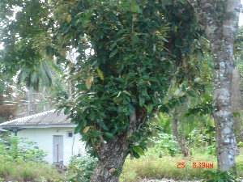 |
ʈɑ टा N सं. a kind of big tree with sweet-smelling, small flowers; एक प्रकार का बड़ा पेड़ जिस पर मीठी ख़ुशबू वाले छोटे-छोटे फूल लगते हैं. SD: flora, फूल-पत्ती.Environmental
ʈɑː टाऽ N सं. sound made by clapping hands; ताली बजाने से निकलने वाली आवाज़. SD: activity & event, कार्यकलाप.
|
ʈɑc टाच N सं. summer migrant fly catcher; एक प्रकार का पक्षी. Rhinomyias nicobarica. SD: bird, पक्षी. NT: Seen in flocks and comes in various colours. Its body swells in the summer. झुण्ड में रहने का शौकीन यह पक्षी कई रंगों में पाया जाता है। गर्मियों में इसका शरीर फूल जाता है।.Environmental
ʈɑjeo ताजेओ Etym: Khora. N सं. fish (generic); मछली. SD: fish, मछली.Environmental
 |
 ʈɑkɑ टाका N सं. Pacific Reef Heron; एक प्रकार का समुद्री बगुला. Egretta sacra. SD: bird, पक्षी. NT: It nests on leaves. It lives in the same area where it is born and is a non-migratory bird. पत्तों में घोंसला बनाने वाला यह पक्षी प्रायः स्थान नहीं बदलता अतः जहां पैदा होता है वहीं मरता है।.Environmental
ʈɑkɑ टाका N सं. Pacific Reef Heron; एक प्रकार का समुद्री बगुला. Egretta sacra. SD: bird, पक्षी. NT: It nests on leaves. It lives in the same area where it is born and is a non-migratory bird. पत्तों में घोंसला बनाने वाला यह पक्षी प्रायः स्थान नहीं बदलता अतः जहां पैदा होता है वहीं मरता है।.Environmental
ʈɑːl टाऽल N सं. gold; brass; सोना; पीतल. SD: natural environment, प्राकृतिक वातावरण.Environmental
ʈɑlɑr टालार N सं. a kind of red leaf; एक प्रकार का लाल पत्ता. SD: flora, फूल-पत्ती.Environmental
ʈɑːlɑr टाऽलार N सं. a stone used as medicine; दवा के रूप में प्रयुक्त होने वाला पत्थर. SD: medicine, औषधी, natural environment, प्राकृतिक वातावरण.Environmental
ʈɑlɔlo टालौलो N सं. black Bedki fish; बेदकी काली मछली. SD: fish, मछली.Environmental
ʈʰɑmimiterbui ठामीमीतेरबूई MORPH: ʈʰɑ-mimi-ter-bui. N सं. stepmother; सौतेली मां. SD: kin term, सम्बंधी वाचक शब्दावली.
ʈʰɑnɖiɖik ठान्डीडीक MORPH: ʈʰɑnɖiɖik. N सं. whole day; पूरा दिन; दिन भर. ʈʰu ʈʰɑnɖiɖik cɑy kɑɲo ठू ठान्डीडीक चाय काञो. I worked the whole day. मैंने पूरे दिन काम किया।. SD: time, समय.
ʈʰɑŋ ठाङ CONJ संयो. then; फिर; तो. SD: conjunct, संयोजक.
ʈɑŋɑ टाङा V क्रि. open mouth wide; मुंह फाड़ना. ŋu-ʈɑŋɑ-bim ङू टाङा बीम. Don’t open your mouth wide. अपना मुंह मत फाड़ो।.
ʈʰɑŋe ठाङे Etym: Bo. V क्रि. yawn; जम्हाई लेना; उबासी लेना. ʈʰoʈʰɑŋebɔm ठोठाङेबौम. I yawn. मैं जम्हाई लेता हूं।.
ʈɑŋol टाङोल V क्रि. catch; पकड़ा.
ʈɑŋolkɑrnɑ टाङोल करना MORPH: ʈɑŋol-kɑrnɑ. V क्रि. fishing by rod; छड़ से मछली पकड़ना. NT: Borrowed from Hindi ‘karna’ ‘to do’. ‘करना’ क्रिया हिन्दी से है।.
ʈɑŋto टाङतो N सं. year; साल; वर्ष. tɑrɑšulu ʈɑŋtɔ e ʈʰitpʰileko ताराशूलू टाङतौ ए ठीत्फीलेको. The tsunami came last year. पिछले साल सूनामी आया था।. SD: time, समय.
ʈɑŋtʰo टाङठो VAR: ʈɑŋto टाङतो. N सं. summer; गर्मियां; ग्रीष्म ऋतु. SD: season, मौसम, natural environment, प्राकृतिक वातावरण.Environmental
ʈɑŋtotujukʰu टाङतोतूजूखू MORPH: ʈɑŋto-tu-jukʰu. N सं. the beginning/ start of the year; साल की शुरुआत. SD: time, समय.
 ʈɑŋtoʈɑ टाङतोटा MORPH: ʈɑŋ-to-ʈɑ. ADV क्रि वि. every year; हर साल.
ʈɑŋtoʈɑ टाङतोटा MORPH: ʈɑŋ-to-ʈɑ. ADV क्रि वि. every year; हर साल.  tɑŋ-to-ʈɑ-ʈʰu ɑono ताङतोटा ठू आओनो. I come every year. मैं हर साल आता हूं।. SD: time, समय.
tɑŋ-to-ʈɑ-ʈʰu ɑono ताङतोटा ठू आओनो. I come every year. मैं हर साल आता हूं।. SD: time, समय.
ʈɑŋʈɔ टाङटौ ADJ वि. without fat; lean; बिना चर्बी के. SD: attribute, विशेषता.
ʈɑːɲorɔ टाऽञोरौ ADV क्रि वि. often; daily; अक्सर; रोज़. SD: time, समय.
 ʈɑo टाओ N सं. a kind of medicinal leaf; एक प्रकार का औषधीय पत्ता. SD: flora, फूल-पत्ती, medicine, औषधी. NT: Rubbed on wounds. Also a good cure for fever and diarrhoea. पेशिच और बुख़ार में प्रयुक्त होता है। घिसकर घाव पर लगाने से घाव ठीक हो जाता है।.Environmental
ʈɑo टाओ N सं. a kind of medicinal leaf; एक प्रकार का औषधीय पत्ता. SD: flora, फूल-पत्ती, medicine, औषधी. NT: Rubbed on wounds. Also a good cure for fever and diarrhoea. पेशिच और बुख़ार में प्रयुक्त होता है। घिसकर घाव पर लगाने से घाव ठीक हो जाता है।.Environmental
 ʈɑotɛrbec टाओतैरबेच VAR: ʈɔtɛrbec टौतैरबेच; ʈowterbeːc टोवतेरबेऽच; tɑutɛrbec ताऊतैरबेच; ʈɔterbɛc टौतेरबैच. N सं. clouds; बादल. SD: natural environment, प्राकृतिक वातावरण.Environmental
ʈɑotɛrbec टाओतैरबेच VAR: ʈɔtɛrbec टौतैरबेच; ʈowterbeːc टोवतेरबेऽच; tɑutɛrbec ताऊतैरबेच; ʈɔterbɛc टौतेरबैच. N सं. clouds; बादल. SD: natural environment, प्राकृतिक वातावरण.Environmental
ʈɑːp टाऽप N सं. potato creeper; आलू की बेल. SD: cooking & food, खाना-पीना.
ʈʰɑpʰic ठाफीच MORPH: ʈʰɑ-pʰic. N सं. calf; बछड़ा या बछड़ी. SD: animal, जानवर.
ʈʰɑrɑbirɑe ठाराबीराए N सं. abusive word ‘asshole’; गाली ‘गांडू’. SD: attribute, विशेषता.
ʈɑrɑoto टाराओतो MORPH: ʈɑrɑ-oto. Etym: Bo. VAR: tɑrɑ-otɔ ताराओतौ. DEIXIS डीक्सीस. when the sun is rising; early morning; जब उजाला होता है; सुबह-सुबह. SD: time, समय.
ʈɑrɑʈʰimiku टाराठीमीकू MORPH: ʈɑrɑʈʰi-mi-ku. N सं. village; गांव. SD: habitat, रहन-सहन.
ʈɑrɑy टाराय N सं. rainy season; बारिश का मौसम. SD: natural environment, प्राकृतिक वातावरण.Environmental
ʈʰɑrɑy थाराय N सं. a deity; एक देवता. SD: supernatural, अलौकिक.Environmental
ʈʰɑrŋe ठारङे N सं. a type of fish; एक प्रकार की मछली. SD: fish, मछली.Environmental
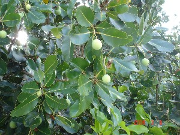 |
ʈɑtotco टातोतचो MORPH: ʈɑ-tot-co. N सं. fruit of the Ta tree; टा पेड़ का फल. SD: edible fruit, खाद्य फल.Environmental
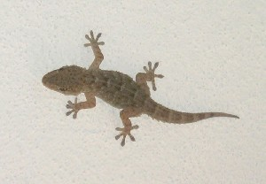 |
 ʈɑʈɑmu टाटामू N सं. house lizard, Gecko; घरेलू छिपकली. SD: reptile, रेंगने वाले जंतु.Environmental
ʈɑʈɑmu टाटामू N सं. house lizard, Gecko; घरेलू छिपकली. SD: reptile, रेंगने वाले जंतु.Environmental
 |
ʈɑʈɑmucɛrel टाटामूचैरेल MORPH: ʈɑʈɑmu-cɛrel. N सं. green lizard; हरी छिपकली. SD: reptile, रेंगने वाले जंतु.Environmental
ʈɑʈɑmuːdbi टाटामूऽदबी MORPH: ʈɑʈɑmu-dbi. N सं. yellow lizard; पीली छिपकली. SD: reptile, रेंगने वाले जंतु.Environmental
ʈɑʈɑmutirkʰuru टाटामूतीरखूरू MORPH: ʈɑʈɑmu-tirkʰuru. N सं. a lizard that makes sound; आवाज़ करने वाली छिपकली. SD: reptile, रेंगने वाले जंतु.Environmental
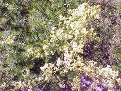 |
ʈɑʈɔlo टाटौलो MORPH: ʈɑ-ʈɔlo. N सं. a kind of flower; एक प्रकार का फूल. SD: flora, फूल-पत्ती.Environmental
ʈɑʈɔŋ टाटौङ N सं. a kind of tree; एक प्रकार का पेड़. SD: flora, फूल-पत्ती.Environmental
ʈɑucɛrel टाऊचैरेल MORPH: ʈɑu-cɛrel. VAR: ʈɔw-cerɛːl टौवचेरैऽल. N सं. sky above the cloud, lit. blue sky; बादलों के ऊपर का आसमान, शाब्दिक अर्थः नीला आसमान. SD: natural environment, प्राकृतिक वातावरण.Environmental
ʈʰeburɔŋoet ठेबूरौङोएत MORPH: ʈʰe-burɔ-ŋoet. N सं. deity, placed by the side of the house; घर के बगल में रखा जाने वाला देवता. SD: household, घरेलू.
 |
ʈec टेच N सं. Andaman Sunbird; कीड़े खाने वाला पक्षी. Nectarinia jugularis. SD: bird, पक्षी. NT: Has yellow bottom. Looks for worms with which it cushions its nest. Sucks juice from fruits and flowers. Size around 11 cm. लगभग 11 से.मी. लम्बा, जिसका पिछला हिस्सा पीले रंग का होता है। कीड़ों को मारकर उनसे घोंसला बनाता है। फल और फूलों का रस चूसता है।.Environmental
ʈʰecɑ ठेचा ADJ वि. be intoxicated after drinking lots of honey; बहुत शहद पीने के बाद मदहोश होना. SD: state, अवस्था.
 ʈʰeibiʈ ठेईबीट MORPH: ʈʰei-biʈ. N सं. a kind of flower; एक प्रकार का फूल. SD: flora, फूल-पत्ती.Environmental
ʈʰeibiʈ ठेईबीट MORPH: ʈʰei-biʈ. N सं. a kind of flower; एक प्रकार का फूल. SD: flora, फूल-पत्ती.Environmental
 ʈel टेल N सं. big king shell, with three horns; तीन सींगों वाली बड़ी सीपी. Cassis cornuta. SD: marine, समुद्री. NT: Found in the sea. समुद्र में पाई जाती है।.Environmental
ʈel टेल N सं. big king shell, with three horns; तीन सींगों वाली बड़ी सीपी. Cassis cornuta. SD: marine, समुद्री. NT: Found in the sea. समुद्र में पाई जाती है।.Environmental
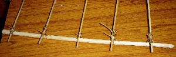 |
 ʈʰel ठेल VAR: tʰel थेल. N सं. bamboo of outrigger hanging in the water; पानी में लटकता हुआ उलण्डी के बांस का टुकड़ा. SD: boat related, नाव सम्बंधी, hunting & gathering, शिकार एवं संचय सम्बंधी. SEE: boyɑ ‘outrigger’ ‘उलण्डी बोया ’; cɔŋɔ ‘outrigger’ ‘बोया चौञौ ’; cɔrɔkʰ2 ‘horizontal bars of outrigger’ ‘बोया की आड़ी डंडियां चौरौखhm:{2}’; kʰuduli ‘outrigger’ ‘बोया खूदूली ’.Environmental
ʈʰel ठेल VAR: tʰel थेल. N सं. bamboo of outrigger hanging in the water; पानी में लटकता हुआ उलण्डी के बांस का टुकड़ा. SD: boat related, नाव सम्बंधी, hunting & gathering, शिकार एवं संचय सम्बंधी. SEE: boyɑ ‘outrigger’ ‘उलण्डी बोया ’; cɔŋɔ ‘outrigger’ ‘बोया चौञौ ’; cɔrɔkʰ2 ‘horizontal bars of outrigger’ ‘बोया की आड़ी डंडियां चौरौखhm:{2}’; kʰuduli ‘outrigger’ ‘बोया खूदूली ’.Environmental
ʈeli टेली VAR: ʈeːli टेऽली. N सं. young chicks in the egg; अण्डे में छोटे चूज़े. SD: bird, पक्षी.Environmental
ʈʰeŋjoŋ ठेङजोङ MORPH: ʈʰeŋ-joŋ. V क्रि. get ready; do make up; तैयार होना; श्रृंगार करना.
ʈeŋŋiyoːwbe टेङ्ङीयोऽवबे PRN सर्व. first dual, we; हम दोनों. SD: pronominal, सर्वनाम.
ʈeɲjire टेञजीरे V क्रि. verbal quarrel; गाली-गलौज करना.
ʈʰercɔlɔŋ ठेरचौलौङ MORPH: ʈʰer-cɔlɔŋ. ADJ वि. steep; चढ़ाई. SD: attribute, विशेषता. SEE: tɑrɑcɔlɔŋ ‘slope’ ‘ढलान; चढ़ाई ताराचौलौङ ’; tɛrcɔlɔŋ ‘downward slope’ ‘ढलान तैरचौलौङ ’.
 ʈʰeʈʰe1 ठेठे V क्रि. be hungry; भूख लगना. ʈʰor ʈʰeʈʰe bɔm ठोर ठेठे बौम. I am hungry. मैं भूखा हूं।.
ʈʰeʈʰe1 ठेठे V क्रि. be hungry; भूख लगना. ʈʰor ʈʰeʈʰe bɔm ठोर ठेठे बौम. I am hungry. मैं भूखा हूं।.  ɑrɑme ʈʰeʈʰe be आरामे ठेठे बे. Ram is hungry. राम भूखा है।. SEE: ʈʰeʈʰe2 ‘hunger’ ‘भूख ठेठेhm:{2}’.
ɑrɑme ʈʰeʈʰe be आरामे ठेठे बे. Ram is hungry. राम भूखा है।. SEE: ʈʰeʈʰe2 ‘hunger’ ‘भूख ठेठेhm:{2}’.
 ʈʰeʈʰe2 ठेठे N सं. hunger; भूख. ʈʰe ʈʰe-em-b-ɑy ठे ठे एम्बाय. be hungry. भूखा होना.
ʈʰeʈʰe2 ठेठे N सं. hunger; भूख. ʈʰe ʈʰe-em-b-ɑy ठे ठे एम्बाय. be hungry. भूखा होना.  ʈʰut ʈʰe ʈʰe pʰo be ठूत ठे ठे फो बे. I am not hungry. मुझे भूख नहीं लगी है।. SD: state, अवस्था. SEE: ʈʰeʈʰe1 ‘be hungry’ ‘भूख लगना ठेठेhm:{1}’.
ʈʰut ʈʰe ʈʰe pʰo be ठूत ठे ठे फो बे. I am not hungry. मुझे भूख नहीं लगी है।. SD: state, अवस्था. SEE: ʈʰeʈʰe1 ‘be hungry’ ‘भूख लगना ठेठेhm:{1}’.
ʈevi टेवी V क्रि. flow; बहना.
ʈeyeli टेयली VAR: ʈɛːl टैऽल. N सं. a variety of sea duck; एक प्रकार की समुद्री बतख. SD: bird, पक्षी.Environmental
ʈɛfe टैफे N सं. leech; जोंक. SD: insect & invertebrate, कीट-पतंग एवं अरीढ़ जीव.Environmental
ʈɛioʈrɛpʰo टैईओट्रैफो N सं. high fever; तेज़ बुख़ार. SD: illness, रोग.
ʈɛl टैल ADJ वि. hard; सख्त. SD: attribute, विशेषता.
ʈɛle टैले VAR: ʈeylɛ टेयलै. N सं. elephant or any heavy object or human or animal; हाथी या कोई भी भारी वस्तु या आदमी या जानवर. ʈeleipʰɛcɑkʰɑmobi empʰil-pʰulo टेलेईफैचाखामोबी एम्फीलफूलो . The old elephant did not die. बूढ़ा हाथी नहीं मरा।. SD: animal, जानवर.
ʈʰɛliu ठैलीऊ MORPH: ʈʰɛ-liu. V क्रि. clean hair growth of the forehead; माथे के आगे के बाल साफ़ करना. ʈʰɛr-liu-k-om ठैरलीऊकोम. He cleans forehead hair. वह माथे के बाल साफ़ करता है।.
 ʈɛlŋe टैलेङे VAR: tɛrɲie तैरञीए. Etym: Bo; बो. N सं. a big black mosquito; एक बड़ा काला मच्छर. tɛrɲie tɑrɑ kɑmo-be तैरञीए तारा कामोबे. There are lots of mosquitoes here. यहाँ पर बहुत से मच्छर हैं।. SD: insect & invertebrate, कीट-पतंग एवं अरीढ़ जीव.Environmental
ʈɛlŋe टैलेङे VAR: tɛrɲie तैरञीए. Etym: Bo; बो. N सं. a big black mosquito; एक बड़ा काला मच्छर. tɛrɲie tɑrɑ kɑmo-be तैरञीए तारा कामोबे. There are lots of mosquitoes here. यहाँ पर बहुत से मच्छर हैं।. SD: insect & invertebrate, कीट-पतंग एवं अरीढ़ जीव.Environmental
ʈɛŋ टैङ N सं. smell; गंध. SD: natural environment, प्राकृतिक वातावरण.Environmental
ʈʰɛŋ- ठैङ- CLT क्लिटिक. clitic, first singular subject (inclusive); प्रथम एकवचन कर्तावाचक क्लिटिक (सम्मिलित). SD: grammar, व्याकरण.
ʈʰɛɲi ठैञी MORPH: ʈʰɛ-ɲi. VAR: ʈʰɛɲiyo ठैञीयो. PRN सर्व. first dual (I and you); मैं और तुम. SD: pronominal, सर्वनाम.
ʈɛɲyorɔkʰo टैञ्योरौखो V क्रि. rained much, poured; बहुत बारिश.
ʈɛo टैओ N सं. arrow point, resembling nail of the turtle spear; कछुए का शिकार करने वाले भाले की नोक. SD: tool, औज़ार, hunting & gathering, शिकार एवं संचय सम्बंधी.Environmental
ʈɛotrɛpʰu टैओत्रैफू V क्रि. get fever; बुख़ार चढ़ना.
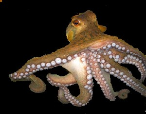 |
 ʈɛpʰe टैफे VAR: ʈefe टेफे; ʈɛpʰi टैफी. N सं. octopus; अष्टभुज. SD: marine, समुद्री.Environmental
ʈɛpʰe टैफे VAR: ʈefe टेफे; ʈɛpʰi टैफी. N सं. octopus; अष्टभुज. SD: marine, समुद्री.Environmental
ʈʰɛrfɛr ठैरफैर MORPH: ʈʰɛr-fɛr. DEIXIS डीक्सीस. the other side of any water body or jungle; उस पार. SD: reference, संदर्भ.
ʈɛrjuko टैरजूको MORPH: ʈɛr-juko. N सं. mouth of the jetty; घाट का मुंह. SD: natural environment, प्राकृतिक वातावरण.Environmental
ʈʰɛrpʰet ठैरफेत VAR: ʈʰɛrpʰɛt ठैरफैत. DEIXIS डीक्सीस. in front of me; before me; facing me; मेरे सामने. SD: space, अन्तरिक्ष.Environmental
ʈɛtɛr टैतैर VAR: ʈɛʈer टैटेर. ADJ वि. handicapped; अपाहिज; लंगड़ा-लूला. SD: attribute, विशेषता.
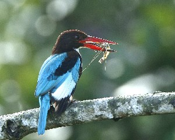 |
 ʈɛʈpʰeno टैटफेनो MORPH: ʈɛʈ-pʰeno. N सं. a bird with red beak; Tern; लाल रंग की चोंच वाला पक्षी. SD: bird, पक्षी. NT: Found near the seaside. It hits humans on the back of the head, often causing bleeding. समुद्र के पास पाया जाता है। लोगों के सिर के पीछे अपनी चोंच से ज़ोर से प्रहार करता है जिसके कारण ख़ून भी निकल आता है।.Environmental
ʈɛʈpʰeno टैटफेनो MORPH: ʈɛʈ-pʰeno. N सं. a bird with red beak; Tern; लाल रंग की चोंच वाला पक्षी. SD: bird, पक्षी. NT: Found near the seaside. It hits humans on the back of the head, often causing bleeding. समुद्र के पास पाया जाता है। लोगों के सिर के पीछे अपनी चोंच से ज़ोर से प्रहार करता है जिसके कारण ख़ून भी निकल आता है।.Environmental
ʈʰi1 ठी PRN सर्व. first singular object (me); मुझे. SD: pronominal, सर्वनाम. SEE: ʈʰi2 ‘place; earth; land’ ‘जगह; धरती; ज़मीन ठीhm:{2}’.
 |
 ʈʰi2 ठी N सं. place; earth; land; जगह; धरती; ज़मीन. SD: habitat, रहन-सहन, natural environment, प्राकृतिक वातावरण. SEE: ʈʰi1 ‘first singular object (me)’ ‘मुझे ठीhm:{1}’.Environmental
ʈʰi2 ठी N सं. place; earth; land; जगह; धरती; ज़मीन. SD: habitat, रहन-सहन, natural environment, प्राकृतिक वातावरण. SEE: ʈʰi1 ‘first singular object (me)’ ‘मुझे ठीhm:{1}’.Environmental
ʈʰibɑːr ठीबाऽर N सं. evening; शाम. SD: time, समय.
ʈʰibi ठीबी V क्रि. live; रहना.  cyɑːl ŋo ʈʰibit ɲyokom च्याऽल ङो ठीबीत ञ्योकोम. Where do you live? तुम कहां रहते हो?
cyɑːl ŋo ʈʰibit ɲyokom च्याऽल ङो ठीबीत ञ्योकोम. Where do you live? तुम कहां रहते हो?
 ʈʰibinjitʰom1 ठीबीनजीथोम MORPH: ʈʰi-bin-jitʰom. Etym: Khora, Bo. N सं. earthquake; भूकंप. SD: natural environment, प्राकृतिक वातावरण. SEE: ʈʰibinjitʰom2 ‘shaking’ ‘कांपना ठीबीनजीथोमhm:{2}’.Environmental
ʈʰibinjitʰom1 ठीबीनजीथोम MORPH: ʈʰi-bin-jitʰom. Etym: Khora, Bo. N सं. earthquake; भूकंप. SD: natural environment, प्राकृतिक वातावरण. SEE: ʈʰibinjitʰom2 ‘shaking’ ‘कांपना ठीबीनजीथोमhm:{2}’.Environmental
ʈʰibinjitʰom2 ठीबीनजीथोम V क्रि. shaking of the earth as in an earthquake; धरती का कांपना जैसे भूकंप आया हो. SEE: ʈʰibinjitʰom1 ‘earthquake’ ‘भूकंप ठीबीनजीथोमhm:{1}’.
ʈʰibiɲyo ठीबीञ्यो MORPH: ʈʰi-bi-ɲyo. V क्रि. live, in the house or in a place; घर में रहना. ɑbhisheki ʈʰibiɲyom अभीशेकी ठीबीञ्योम. Abhishek lives at home. अभिषेक घर में रहता है।.
ʈʰibirpʰuŋɔŋ थीबीरफूङौङ MORPH: ʈʰi-bir-pʰuŋ-ɔŋ. VAR: ʈʰibirpʰuɲɔn ठीबीरफूञौन. V क्रि. dig; खोदना. ʈʰu-tʰibirpʰuŋɔŋ ठूथीबीरफूङौङ. I am digging. मैं खोद रहा हूं।.
 ʈʰibitlɛpe ठीबीत्लैपे V क्रि. clear or wash a place; किसी जगह को साफ़ करना या धोना.
ʈʰibitlɛpe ठीबीत्लैपे V क्रि. clear or wash a place; किसी जगह को साफ़ करना या धोना.
ʈʰibitpʰile ठीबीत्फीले MORPH: ʈʰibit-pʰile. N सं. tsunami; सूनामी. ʈʰibit pʰile ʈɔŋ biŋ mirse ठीबीत फीले टौङ बीङ मीरसे. All the trees got uprooted due to the tsunami. सूनामी की वजह से सारे पेड़ उखड़ गए।. SD: natural environment, प्राकृतिक वातावरण. SEE: ʈʰitpʰile ‘flood; deluge’ ‘बाढ़ आना; जलमग्न होना ठीत्फीले ’.Environmental
ʈʰibukʰe ठीबूखे MORPH: ʈʰi-bukʰe. Etym: Bo. N सं. wall; दीवार. SD: household, घरेलू.
ʈʰiburoŋo ठीबूरोङो MORPH: ʈʰi-buroŋo. N सं. edge, of a surface; किसी भी सतह का किनारा. SD: space, अन्तरिक्ष.Environmental
ʈʰiburɔɲɔ ठीबूरौञौ MORPH: ʈʰi-burɔɲɔ. VAR: ʈiːburɔːŋɔ टीऽबूरौऽङौ. N सं. tropical rocky beach; seashore; विषुवतीय पथरीला तट; समुद्री तट. SD: natural environment, प्राकृतिक वातावरण.Environmental
ʈʰicɑ ठीचा N सं. rack; platform; stage; रैक; चबूतरा; मंच. SD: hunting & gathering, शिकार एवं संचय सम्बंधी.Environmental
ʈʰicɑːe ठीचाऽए MORPH: ʈʰi-cɑːe. N सं. barren land; बंजर ज़मीन. SD: natural environment, प्राकृतिक वातावरण.Environmental
ʈiːccɔwlɑ टीऽच्चौव्ला VAR: ʈiːccoːlɑ टीऽच्चोऽला. N सं. animal; जानवर. SD: animal, जानवर.
ʈʰico ठीचो VAR: ʈʰi-cɔ ठीचौ. PRN सर्व. my; first singular genitive (alienable); मेरा; प्रथम एकवचन निजवाचक (पृथक). ɑkɑuno ukʰe ɑtʰire ʈʰico kʰimil be आकाऊनो ऊखे आथीरे ठीचो खीमील बे. The boy who is sitting there is my friend. जो लड़का वहां खड़ा है, वह मेरा दोस्त है।. SD: pronominal, सर्वनाम.
ʈʰicolɑkɔm ठीचोलाकौम MORPH: ʈʰi-colɑk-ɔm. V क्रि. walk on all fours; चारों पैरों पर चलना.
ʈʰicop ठीचोप MORPH: ʈʰi-cop. N सं. our dwelling place; हमारा घर. SD: habitat, रहन-सहन. NT: Used with reference to the island where the Great Andamanese reside, e.g. Strait Island. स्ट्रेट द्वीप जहां अण्डमानी लोग रहते हैं।.
ʈʰiditoto ठीदीतोतो MORPH: ʈʰi-dit-oto. V क्रि. advent of morning, lit. rising from the earth; पौ फटना; सुबह होना, शाब्दिक अर्थः ज़मीन से निकलता हुआ.
ʈʰie ठीए V क्रि. bluff; धोखा देना. ŋo-tʰɑ-tɑ-ʈʰie-k-ɔm ङोथाताठीएकौम. You are bluffing me. तुम मुझे धोखा दे रहे हो।.
ʈiːjiːt टीऽजीऽत N सं. horizon; क्षितिज. SD: natural environment, प्राकृतिक वातावरण.Environmental
 ʈʰikʰɑmol ठीखामोल MORPH: ʈʰi-kʰɑmol. V क्रि. come now; अभी आओ.
ʈʰikʰɑmol ठीखामोल MORPH: ʈʰi-kʰɑmol. V क्रि. come now; अभी आओ.
ʈʰikoɖuŋpʰubi ठीकोडूङफूबी MORPH: ʈʰi-koɖuŋ-pʰubi. N सं. place, big; बड़ी जगह. SD: natural environment, प्राकृतिक वातावरण.Environmental
ʈʰikokɛl ठीकोकैल V क्रि. delay; देर करना; देर होना.
ʈʰiːlɑrsiro ठीऽलारसीरो MORPH: ʈʰiːlɑr-siro. Etym: Pujjukar; पुज्जूकर. VAR: ʈiːlɑːr-siroː टीऽलाऽरसीरोऽ. N सं. island, Havelock; हैवलोक द्वीप. SD: natural environment, प्राकृतिक वातावरण.Environmental
ʈʰilep ठीलेप MORPH: ʈʰi-lep. V क्रि. dusting; झाड़ना.
ʈʰimikʰe ठीमीखे MORPH: ʈʰi-mi-kʰe. Q परि. first; पहला. SD: quantifier, परिमाण वाचक.
ʈʰimikʰu1 ठीमीखू N सं. a deity; एक देवता. SD: supernatural, अलौकिक. SEE: ʈʰimikʰu2 ‘forest; place’ ‘जंगल; क्षेत्र ठीमीखूhm:{2}’.Environmental
 ʈʰimikʰu2 ठीमीखू N सं. forest; place; जंगल; क्षेत्र. ʈʰimikʰuʈɑrɑʈɔm ठीमीखूटाराटौम. big forest. बड़ा जंगल. ʈʰ-ɑrɑ-ʈʰimikʰu ठाराठीमीखू. my place. मेरा क्षेत्र. ʈʰu ʈʰimikʰu-ɑk ʈʰut-cɔne-pʰo-b-e ठू ठीमीखूआक ठूत्चौनेफोबे. I do not go to the forest. मैं जंगल में नहीं जाता हूं।.
ʈʰimikʰu2 ठीमीखू N सं. forest; place; जंगल; क्षेत्र. ʈʰimikʰuʈɑrɑʈɔm ठीमीखूटाराटौम. big forest. बड़ा जंगल. ʈʰ-ɑrɑ-ʈʰimikʰu ठाराठीमीखू. my place. मेरा क्षेत्र. ʈʰu ʈʰimikʰu-ɑk ʈʰut-cɔne-pʰo-b-e ठू ठीमीखूआक ठूत्चौनेफोबे. I do not go to the forest. मैं जंगल में नहीं जाता हूं।.  cɑobi ʈʰimikʰukɑk tɛbolo चाओबी ठीमीखूकाक तैबोलो. The dog ran away to the jungle. कुत्ता जंगल में भाग गया।. SD: natural environment, प्राकृतिक वातावरण, flora, फूल-पत्ती. SEE: ʈʰimikʰu1 ‘deity’ ‘देवता ठीमीखूhm:{1}’.Environmental
cɑobi ʈʰimikʰukɑk tɛbolo चाओबी ठीमीखूकाक तैबोलो. The dog ran away to the jungle. कुत्ता जंगल में भाग गया।. SD: natural environment, प्राकृतिक वातावरण, flora, फूल-पत्ती. SEE: ʈʰimikʰu1 ‘deity’ ‘देवता ठीमीखूhm:{1}’.Environmental
ʈʰimikʰukɑɲo ठीमीखूकाञो MORPH: ʈʰimikʰu-kɑ-ɲo. N सं. forest dwellers; जंगल के लोग. SD: people, लोग.
ʈʰimikʰulɑo ठीमीखूलाओ MORPH: ʈʰimikʰu-lɑo. N सं. spirits, of land; भूमि की आत्मा. SD: mythology, पौराणिक.
 |
ʈʰimikʰumɔco ठीमीखूमौचो MORPH: ʈʰimikʰu-mɔco. N सं. wild rooster; Nicobar Megapode; जंगली मुर्गा. Megapodius nicobariensis. SD: bird, पक्षी. NT: An endemic and endangered rooster found in the Nicobar group of islands. It is essentially a bird of the dense wet tropical forest along the seashore. About the size of a small domestic hen with conspicuously large feet and shorter tail. The eggs are incubated in mounds made of sand and rotten vegetation. लुप्त होती निकोबारी मुर्गे की जाति। यह समुद्र किनारे घने और पनीले जंगलों में पाई जाती है। घरेलू मुर्गी की भांति दिखती है पर इसके पंजे बड़े और पूंछ छोटी होती है। रेत और सड़ी हुई वनस्पति के ढेर में अण्डे सेती है।.Environmental
ʈʰimikʰuŋerɔ ठीमीखूङेरौ MORPH: ʈʰimikʰu-ŋerɔ. VAR: ʈʰimikʰu-ɲero ठीमीखूञेरो. N सं. forest, dense; घना जंगल. SD: natural environment, प्राकृतिक वातावरण.Environmental
ʈʰimikʰutɑrɑtɔm ठीमीखूतारातौम MORPH: ʈʰimikʰu-tɑrɑtɔm. N सं. big, old forest; विशाल, पुराना जंगल. SD: natural environment, प्राकृतिक वातावरण.Environmental
ʈʰimikʰutoŋpʰoŋ ठीमीखूतोङफोङ MORPH: ʈʰimikʰu-toŋ-pʰoŋ. N सं. middle of the jungle; heart of the jungle; जंगल का मध्य भाग. SD: space, अन्तरिक्ष.Environmental
ʈʰimikʰutopʰoŋe ठीमीखूतोफोङे MORPH: ʈʰimikʰu-topʰoŋe. N सं. jungle dweller; जंगलवासी. SD: people, लोग.
ʈʰimikʰutʰutbɛc ठीमीखूथूत्बैच MORPH: ʈʰimikʰu-tʰut-bɛc. N सं. grass, wild; जंगली घास. SD: flora, फूल-पत्ती.Environmental
ʈʰimolɔʈoŋ ठीमोलौटोङ MORPH: ʈʰimolɔ-ʈoŋ. VAR: ʈiŋoːlɔ टीङोऽलौ. N सं. Banyan tree; बरगद का पेड़. SD: flora, फूल-पत्ती. NT: Sticky, milky juice is secreted from this tree. इस पेड़ से चिपचिपा दूध जैसा पदार्थ निकलता है।.Environmental
 ʈʰinjid ठीनजीद VAR: tʰinjid थीनजीद. N सं. earthquake; भूकंप. SD: natural environment, प्राकृतिक वातावरण.Environmental
ʈʰinjid ठीनजीद VAR: tʰinjid थीनजीद. N सं. earthquake; भूकंप. SD: natural environment, प्राकृतिक वातावरण.Environmental
ʈʰinunopʰobe ठीनूनोफोबे VAR: ʈiːnunofofe टीऽनूनोफोफे. DEIXIS डीक्सीस. far away; बहुत दूर. SD: space, अन्तरिक्ष.Environmental
ʈʰinurui ठीनूरूई MORPH: ʈʰi-nurui. V क्रि. search for worms in the mud (by duck); मिट्टी में कीड़ों को ढूंढ़ना (बतख द्वारा). NT: Ducks search for worms hidden in the sand by blowing it off. बत्तख धूल उड़ाते हुए रेत में छुपे हुए कीड़ों को ढूंढ़ती है।.
ʈʰio ठीओ PRN सर्व. first singular; प्रथम एकवचन. ʈʰio jero be ठीओ जेरो बे. I am a Jeru. मैं जेरो हूं।. SD: pronominal, सर्वनाम.
ʈʰipʰoŋ ठीफोङ V क्रि. make holes, in the earth; ज़मीन में गड्ढे बनाना. NT: This term is also used for chicken scratching the ground. मुर्गी द्वारा ज़मीन खुरचने को भी ठीफोङ कहते हैं।.
ʈʰirbɛt ठीरबैत VAR: ʈʰibɑt ठीबात; ɖirbɑʈ डीरबाट. N सं. night; रात. SD: time, समय.
ʈʰireʈɔlo ठीरेटौलो N सं. star, small; छोटा तारा. SD: natural environment, प्राकृतिक वातावरण.Environmental
ʈʰišiɖo1 ठीशीडो MORPH: ʈʰi-šiɖo. V क्रि. hunt, in the forest; जंगल में शिकार करना. SEE: ʈʰišiɖo2 ‘uproot’ ‘उखाड़ना ठीशीडोhm:{2}’.
ʈʰišiɖo2 ठीशीडो MORPH: ʈʰi-šiɖo. V क्रि. uproot; उखाड़ना. SEE: ʈʰišiɖo1 ‘hunting, in the forest’ ‘शिकार करना, जंगल में ठीशीडोhm:{1}’.
ʈʰitɑpʰoŋ ठीताफोङ N सं. door; दरवाज़ा. SD: household, घरेलू.
 ʈʰitɑrɑle ठीताराले MORPH: ʈʰi-tɑrɑ-le. N सं. slope; ढलान. ʈʰi-ɑrɑ-le-kom ठीआरालेकोम. I am going down the slope. मैं ढलान से उतर रहा हूं।. SD: space, अन्तरिक्ष.Environmental
ʈʰitɑrɑle ठीताराले MORPH: ʈʰi-tɑrɑ-le. N सं. slope; ढलान. ʈʰi-ɑrɑ-le-kom ठीआरालेकोम. I am going down the slope. मैं ढलान से उतर रहा हूं।. SD: space, अन्तरिक्ष.Environmental
ʈʰitbɔlo ठीतबौलो V क्रि. search (for something) on the ground; मैदान में ढूंढ़ना.
ʈʰiterɖelo ठीतेरडेलो MORPH: ʈʰi-ter-ɖelo. N सं. island; द्वीप. SD: natural environment, प्राकृतिक वातावरण.Environmental
ʈʰiterɖit ठीतेरडीत MORPH: ʈʰi-ter-ɖit. VAR: ʈiː-ter-ɖiːʈ टीऽतेरडीऽट. N सं. window; खिड़की. SD: household, घरेलू.
ʈiːterfoːr टीऽतेरफोऽर N सं. fireplace; चूल्हा. SD: cooking & food, खाना-पीना.
ʈʰiterino ठीतेरीनो MORPH: ʈʰi-ter-ino. N सं. wet place; गीली जगह. SD: habitat, रहन-सहन.
ʈʰiterlukʰui ठीतेरलूखूई VAR: ʈiːterluxuy टिऽतेरलूखूय. N सं. deep water of river bed; abyss; नदी तल का गहरा पानी; खाई. SD: natural environment, प्राकृतिक वातावरण.Environmental
ʈʰiterɔto ठीतेरौटो MORPH: ʈʰi-ter-ɔto. DEIXIS डीक्सीस. today; आज. SD: time, समय.
ʈʰiterɔtɔ ठीतेरौतौ V क्रि. daybreak; उजाला होना.
DEIXIS डीक्सीस. next morning; अगली सुबह. ʈʰi-ter-otɔ pʰriŋkos-ɑk ʈʰ-ut-cɔne-b-ɔm ठीतेरओतौ फ्रीङकोसाक ठूत्चौनेबौम. I will go to Strait at daybreak (next morning). मैं कल सुबह स्ट्रेट जाऊंगा।.
ʈʰitertʰɔr ठीतेरथौर MORPH: ʈʰi-ter-tʰɔr. N सं. leaves, used for thatching; घर बनाने में प्रयुक्त होने वाले पत्ते. SD: flora, फूल-पत्ती.Environmental
ʈʰiterut1 ठीतेरूत VAR: ʈiːteruʈ टीऽतेरूट. V क्रि. ditch; cheat; धोखा देना. SEE: ʈʰiterut2 ‘ditch’ ‘धोखा ठीतेरूतhm:{2}’.
ʈʰiterut2 ठीतेरूत VAR: ʈiːteruʈ टीऽतेरूट. N सं. ditch; धोखा. SD: psychological predicate, मनोवैज्ञानिक विधेय. SEE: ʈʰiterut1 ‘ditch’ ‘धोखा देना ठीतेरूतhm:{1}’.
ʈʰitɛrbɛi1 ठीतैरबैई MORPH: ʈʰi-tɛr-bɛi. VAR: ʈʰibeːl ठीबेऽल. N सं. broom; झाड़ू. SD: household, घरेलू. SEE: ʈʰitɛrbɛi2 ‘broom’ ‘झाड़ू लगाना ठीतैरबैईhm:{2}’.
ʈʰitɛrbɛi2 ठीतैरबैई MORPH: ʈʰi-tɛr-bɛi. VAR: ʈʰibeːl ठीबेऽल. V क्रि. broom; झाड़ू लगाना. SEE: ʈʰitotbel ‘clean place’ ‘साफ़ जगह ठीतोतबेल ’; ʈʰitɛrbɛi1 ‘broom’ ‘झाड़ू ठीतैरबैईhm:{1}’.
ʈʰitɛrbɛibiɔrɛ ठीतैरबैईबीऔरै MORPH: ʈʰi-tɛr-bɛi-bi-ɔrɛ. V क्रि. make broom; झाड़ू बनाना.
ʈʰitɛrpʰoŋ ठीतैरफोङ MORPH: ʈʰi-tɛr-pʰoŋ. N सं. pit; ditch; गड्ढा; नाली. SD: natural environment, प्राकृतिक वातावरण.Environmental
ʈʰitɛrʈɑŋo ठीतैरटाङो MORPH: ʈʰi-tɛr-ʈɑŋo. N सं. island, big; बड़ा द्वीप. SD: natural environment, प्राकृतिक वातावरण.Environmental
ʈʰitkorɑp ठीत्कोराप MORPH: ʈʰit-korɑp. N सं. land, dry; सूखी ज़मीन. SD: natural environment, प्राकृतिक वातावरण.Environmental
 ʈʰitokɑrɑ ठीतोकारा MORPH: ʈʰi-to-kɑrɑ. N सं. incline; ढाल. SD: space, अन्तरिक्ष.Environmental
ʈʰitokɑrɑ ठीतोकारा MORPH: ʈʰi-to-kɑrɑ. N सं. incline; ढाल. SD: space, अन्तरिक्ष.Environmental
ʈiːtondtɑːlɛbɑːrɑ टीऽतोन्दताऽलैबाऽरा N सं. straight rock; सीधी चट्टान. SD: natural environment, प्राकृतिक वातावरण.Environmental
ʈʰitotbel ठीतोतबेल MORPH: ʈʰi-tot-bel. VAR: ʈiːtotbeːl टीऽतोतबेऽल. N सं. clean place; साफ़ जगह. SD: habitat, रहन-सहन. SEE: ʈʰitɛrbɛi2 ‘broom’ ‘झाड़ू लगाना ठीतैरबैईhm:{2}’.
ʈʰitotkɑtɑ ठीतोत्काता MORPH: ʈʰi-tot-kɑtɑ. N सं. inlet, small; छोटा द्वीप. SD: natural environment, प्राकृतिक वातावरण.Environmental
ʈʰitotkɔrɔbo ठीतोतकौरौबो MORPH: ʈʰit-tot-kɔrɔbo. N सं. dry soil or land; सूखी मिट्टी या ज़मीन. SD: natural environment, प्राकृतिक वातावरण. SEE: ɑʈpʰɑi ‘wood, dry’ ‘लकड़ी, सूखी आटफाई ’; korobo ‘place, dry’ ‘जगह, सूखी कोरोबो ’.Environmental
ʈʰitɔbec ठीतौबेच MORPH: ʈʰi-tɔ-bec. N सं. grass; घास. SD: flora, फूल-पत्ती.Environmental
ʈʰitɔmul ठीतौमूल MORPH: ʈʰi-tɔ-mul. N सं. public rubbish dump; कूड़े का ढेर. SD: waste product, कूड़ा-कचरा.
ʈʰitɔtbetɑpʰo ठीतौत्बेताफो MORPH: ʈʰi-tɔt-be-tɑ-pʰo. DEIXIS डीक्सीस. opening in the forest with little undergrowth; जंगल में जाने का रास्ता. SD: natural environment, प्राकृतिक वातावरण.Environmental
ʈʰitpʰile ठीत्फीले MORPH: ʈʰi-it-pʰile. V क्रि. flood; deluge; बाढ़ आना; जलमग्न होना. tɑrɑšulu ʈɑnʈɔ e ʈʰitpʰileko ताराशूलू टान्टौ ए ठीत्फीलेको. Last year a huge flood (tsunami) came. पिछले साल भयानक बाढ़ (सूनामी) आई थी।. SEE: ʈʰibitpʰile ‘Tsunami’ ‘सूनामी ठीबीत्फीले ’.
ʈʰituɲiyɑʈeŋ ठीतूञीयाटेङ MORPH: ʈʰi-tuɲ-iiyɑ-ʈeŋ. ADJ वि. very hazy; बहुत ही धुंधला. SD: attribute, विशेषता.
ʈiːʈɑːlɑrɑ टीऽटाऽलारा MORPH: ʈiː-ʈɑː-lɑrɑ. N सं. bell; घंटी. SD: household, घरेलू.
ʈʰiʈɑrɑtɑ1 ठीटाराता MORPH: ʈʰi-ʈɑrɑ-tɑ. VAR: ʈiːtɑrɑːtɑ टीऽताराऽता. N सं. floor, of house; घर का फ़र्श. SD: household, घरेलू. SEE: ʈʰiʈɑrɑtɑ2 ‘level ground; flat land’ ‘समतल मैदान; समतल ज़मीन ठीटाराताhm:{2}’.
ʈʰiʈɑrɑtɑ2 ठीटाराता MORPH: ʈʰi-ʈɑrɑ-tɑ. VAR: ʈiːtɑrɑːtɑ टीऽताराऽता. N सं. level ground; flat land; समतल मैदान; समतल ज़मीन. SD: natural environment, प्राकृतिक वातावरण. SEE: ʈʰiʈɑrɑtɑ1 ‘floor, of house’ ‘फ़र्श, घर का ठीटाराताhm:{1}’.Environmental
ʈʰiʈɑʈkɔrɔ ठीटाटकौरौ MORPH: ʈʰiʈɑʈ-kɔrɔ. N सं. dry, land; सूखी ज़मीन. SD: natural environment, प्राकृतिक वातावरण.Environmental
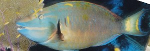 |
ʈʰiʈʰerɑ ठीठेरा N सं. a kind of fish; एक प्रकार की मछली. SD: fish, मछली.Environmental
ʈʰiʈɛrɸɔm ठीटैरफौम V क्रि. dig land; ज़मीन खोदना.
ʈʰiʈɔʈbeʈɑpʰo ठीटौटबेटाफो MORPH: ʈʰi-ʈɔʈ-be-ʈɑpʰo. N सं. dug up land or area; खुदी हुई ज़मीन का हिस्सा. SD: natural environment, प्राकृतिक वातावरण.Environmental
ʈʰiutɖirim ठीऊत्डीरीम MORPH: ʈʰi-ut-ɖirim. N सं. darkness, on the land; धरती के ऊपर छाया अंधेरा. SD: attribute, विशेषता.
ʈʰiyo ठीयो PRN सर्व. first singular existential; प्रथम एकवचन अस्तित्ववाचक. ʈʰiyo ŋio ʈʰɛŋut conne-be ठीयो ङीओ ठैङूत चोन्नेबे. He and I will go. वह और मैं जाएंगे।. SD: pronominal, सर्वनाम.
 ʈo1 टो N सं. bamboo, thick, tall, used for hunting turtle; लंबा, मोटा बांस जिससे कछुए का शिकार किया जाता है. SD: flora, फूल-पत्ती, hunting & gathering, शिकार एवं संचय सम्बंधी. SEE: ʈo2 ‘spear’ ‘भाला टोhm:{2}’.Environmental
ʈo1 टो N सं. bamboo, thick, tall, used for hunting turtle; लंबा, मोटा बांस जिससे कछुए का शिकार किया जाता है. SD: flora, फूल-पत्ती, hunting & gathering, शिकार एवं संचय सम्बंधी. SEE: ʈo2 ‘spear’ ‘भाला टोhm:{2}’.Environmental
ʈo2 टो N सं. spear made of bamboo to kill turtle; कछुआ मारने वाला बांस का भाला. SD: hunting & gathering, शिकार एवं संचय सम्बंधी. SEE: ʈo1 ‘bamboo’ ‘बांस टोhm:{1}’.Environmental
ʈoɑ टोआ N सं. layers of stones; एक के ऊपर एक रखे पत्थर. SD: natural environment, प्राकृतिक वातावरण.Environmental
ʈobɑ टोबा N सं. a variety of sea snake; एक प्रकार का समुद्री सांप. SD: reptile, रेंगने वाले जंतु.Environmental
 ʈobol टोबोल VAR: ʈoːbol टोऽबोल. N सं. spear used to kill pig, dugong and crocodile; सूअर, डूगोंग, और मगरमच्छ मारने वाला भाला. SD: tool, औज़ार, hunting & gathering, शिकार एवं संचय सम्बंधी.Environmental
ʈobol टोबोल VAR: ʈoːbol टोऽबोल. N सं. spear used to kill pig, dugong and crocodile; सूअर, डूगोंग, और मगरमच्छ मारने वाला भाला. SD: tool, औज़ार, hunting & gathering, शिकार एवं संचय सम्बंधी.Environmental
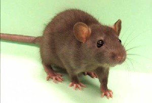 |
ʈoɖe टोडे MORPH: ʈo-ɖe. VAR: ʈoɖo टोडो; ʈɔwɖe टौवडे. N सं. rat; चूहा. rɛyɑ mɔʈɔtɑ ʈoɖe tɛbɔlo रैया मौटौता टोडे तैबौलो. The rat ran away touching the Reya’s foot. चूहा रेया के पैर को छूता हुआ भाग गया।. bɔrot ʈoɖe बौरोत टोडे. big rat. बड़ा चूहा. SD: animal, जानवर.
ʈʰoekterpʰol ठोएकतेरफोल MORPH: ʈʰo-ekter-pʰol. V क्रि. have intercourse; संभोग करना.
ʈok टोक N सं. small fish with coloured polka dots; छोटी मछली जिस पर रंगीन धब्बे होते हैं. SD: fish, मछली.Environmental
ʈokɑs टोकास N सं. shell (generic); सीपी. SD: marine, समुद्री.Environmental
 ʈokʰil टोखील V क्रि. kill, with an arrow; तीर से मारना. ʈʰuʈ tɑjie cɔr bi ʈokʰil ʈʰoʈʰ ʈʰe ʈʰe bɔŋ ठूट ताजीए चौर बी टोखील ठोठ ठे ठे बौङ. He felt hungry while fishing. मछली पकड़ते-पकड़ते उसको भूख लग गई।.
ʈokʰil टोखील V क्रि. kill, with an arrow; तीर से मारना. ʈʰuʈ tɑjie cɔr bi ʈokʰil ʈʰoʈʰ ʈʰe ʈʰe bɔŋ ठूट ताजीए चौर बी टोखील ठोठ ठे ठे बौङ. He felt hungry while fishing. मछली पकड़ते-पकड़ते उसको भूख लग गई।.
ʈokkɑrɑ टोक्कारा MORPH: ʈok-kɑrɑ. V क्रि. climb; चढ़ना.
ʈʰokʰuntɛrcɔk ठोखूनतैरचौक MORPH: ʈʰo-kʰun-tɛr-cɔk. N सं. pick tooth; दांत कुरेदना. SD: activity & event, कार्यकलाप.
ʈol1 टोल N सं. grey hair; सफ़ेद बाल. ŋoʈol ङोटोल. your grey hair. तुम्हारे सफ़ेद बाल. ʈʰ-oʈ-bec-bekɑ-ʈol-ɔ ठोटबेचबेकाटोलौ. My head is full of grey hair. मेरे सिर में सफ़ेद बाल हैं।. SD: body part term, शारीरिक अंग शब्दावली. SEE: ʈol2 ‘pluck’ ‘तोड़ना टोलhm:{2}’; ʈol3 ‘soil’ ‘मिट्टी टोलhm:{3}’.
ʈol2 टोल V क्रि. pluck; तोड़ना. ɛ-ʈɔlo-t ʈol ऐ टौलो त टोल. to pluck flower. फूल तोड़ना. SEE: ʈol1 ‘grey hair’ ‘सफ़ेद बाल टोलhm:{1}’; ʈol3 ‘soil’ ‘मिट्टी टोलhm:{3}’.
 ʈol3 टोल N सं. soil; मिट्टी. SD: natural environment, प्राकृतिक वातावरण. SEE: ʈol1 ‘grey hair’ ‘सफ़ेद बाल टोलhm:{1}’; ʈol2 ‘pluck’ ‘तोड़ना टोलhm:{2}’.Environmental
ʈol3 टोल N सं. soil; मिट्टी. SD: natural environment, प्राकृतिक वातावरण. SEE: ʈol1 ‘grey hair’ ‘सफ़ेद बाल टोलhm:{1}’; ʈol2 ‘pluck’ ‘तोड़ना टोलhm:{2}’.Environmental
ʈʰol ठोल V क्रि. climb down; descend; नीचे उतरना. ʈʰol ɛ ठोल ऐ. S/he climbed down. वह नीचे उतरा/ उतरी।.
ʈole टोले VAR: ʈɔle टौले; ʈowe टोवे. N सं. a kind of plain potato; एक प्रकार का मीठा आलू. SD: edible item, खाद्य सामग्री.Environmental
ʈolebɑlɔ टोलेबालौ MORPH: ʈole-bɑlɔ. N सं. tuber creeper; कंद की बेल. SD: flora, फूल-पत्ती.Environmental
ʈoleise टोलेईसे MORPH: ʈole-ise. N सं. potato, boiled; उबला आलू. SD: edible item, खाद्य सामग्री.Environmental
 |
ʈoliʈoy टोलीटोय N सं. seeds, of mangrove tree; खाड़ी पेड़ के बीज. SD: flora, फूल-पत्ती.Environmental
ʈoːlone टोऽलोने N सं. fat, of bone of a turtle; कछुए की हड्डी की चर्बी. SD: body part term, शारीरिक अंग शब्दावली, marine, समुद्री.Environmental
ʈomcɑkʰɑmo टोमचाखामो N सं. old tree; बूढ़ा पेड़. SD: flora, फूल-पत्ती.Environmental
 ʈomoni टोमोनी N सं. Hatcher fish, a kind of fish with very hard skin; त्वचा वाली मछली. SD: fish, मछली.Environmental
ʈomoni टोमोनी N सं. Hatcher fish, a kind of fish with very hard skin; त्वचा वाली मछली. SD: fish, मछली.Environmental
ʈʰonʈɑɲyobɔ ठोनटाञ्योबौ MORPH: ʈʰon-ʈɑɲyobɔ. N सं. earwax; कान का मैल. SD: body product, शरीर से उत्पन्न.
 ʈoŋterkʰuru टौङतेरखूरू N सं. tree, big; बड़ा पेड़. SD: flora, फूल-पत्ती.Environmental
ʈoŋterkʰuru टौङतेरखूरू N सं. tree, big; बड़ा पेड़. SD: flora, फूल-पत्ती.Environmental
 ʈopbe टोपबे MORPH: ʈop-be. VAR: ʈɔpʰbe टौफबे. V क्रि. bathe; नहाओ.
ʈopbe टोपबे MORPH: ʈop-be. VAR: ʈɔpʰbe टौफबे. V क्रि. bathe; नहाओ.
 ʈopʰel टोफेल N सं. bath; स्नान. SD: activity & event, कार्यकलाप.
ʈopʰel टोफेल N सं. bath; स्नान. SD: activity & event, कार्यकलाप.
ʈorok टोरोक Etym: Jeru; जेरू. VAR: cenrɑ चेन्रा. Etym: Bea; बेया. N सं. a kind of flower; एक प्रकार का फूल. SD: flora, फूल-पत्ती. NT: The bloom is associated with the September, October and the first half of November. इस फूल का खिलना सितंबर से मध्य नवम्बर तक के समय का द्योतक होता है।.Environmental
 |
ʈoromtutbiyo टोरोमतूतबीयो MORPH: ʈorom-tut-biyo. N सं. Red Munia; Red Avadavat; लाल पक्षी. Amandava amandava. SD: bird, पक्षी.Environmental
ʈorɔburoŋo टोरौबूरोङो MORPH: ʈorɔ-buroŋo. N सं. long sand beach; दूर तक बिछी हुई सागर किनारे की बालू. SD: natural environment, प्राकृतिक वातावरण.Environmental
ʈorum टोरूम ADJ वि. salty; खारा. SD: attribute, विशेषता.
ʈotliːp टोतलीऽप N सं. flesh, my; मेरा मांस. SD: body part term, शारीरिक अंग शब्दावली.
ʈʰotoɔtʰu ठोतोऔथू VAR: ʈʰotoɔtʰukoi ठोतोऔथूकोई. N सं. elder brother; ज्येष्ठ भाई. SD: kin term, सम्बंधी वाचक शब्दावली.
ʈottɑŋo टोत्ताङो Etym: Khora. N सं. edge, of the forest; जंगल का किनारा. SD: natural environment, प्राकृतिक वातावरण.Environmental
ʈoʈɑ टोटा V क्रि. sow; बोना.
ʈʰoʈʰɑŋe ठोठाङे MORPH: ʈʰo-ʈʰɑŋe. N सं. yawn; जम्हाई. SD: activity & event, कार्यकलाप.
ʈʰoʈɑrpʰuc ठोटारफूच VAR: ʈʰotɑrɑpʰuc ठोताराफूच. N सं. Andamanese; अण्डमानी लोग. SD: people, लोग.
 ʈoʈɛmo टोटैमो N सं. Purple Sunbird; जामनी रंग का छोटा पक्षी. SD: bird, पक्षी.Environmental
ʈoʈɛmo टोटैमो N सं. Purple Sunbird; जामनी रंग का छोटा पक्षी. SD: bird, पक्षी.Environmental
ʈoʈɔp टोटौप Etym: Sare; सारे. V क्रि. bath; नहाना. ʈoʈɔpbɔm टोटौपबौम. He is taking a bath. वह नहा रहा है।.
ʈow टोव N सं. a kind of tree; एक प्रकार का पेड़. SD: flora, फूल-पत्ती.Environmental
ʈowoke टोवोके MORPH: ʈowo-k-e. V क्रि. cut in big pieces (to make oars or boat); बड़े टुकड़ों में काटना (चप्पू या नाव बनाने के लिए). rowo-kɑtrɑo-ʈowo-ke रोवो कात्राओ टोवोके. Make the centre of the boat (by scooping it). नाव का बीच का हिस्सा बनाना (खोदकर).  ʈowo-tut-tɛmo-cokbi-bi-bɑnom-ɑrɑlišuko टोवो तूत तैमो चोक्बीबी बानोम आरालीशूको. By the time the boat was made, he had finished cooking turtle. नाव बनने से पहले, उसने कछुआ पका लिया था।.
ʈowo-tut-tɛmo-cokbi-bi-bɑnom-ɑrɑlišuko टोवो तूत तैमो चोक्बीबी बानोम आरालीशूको. By the time the boat was made, he had finished cooking turtle. नाव बनने से पहले, उसने कछुआ पका लिया था।.
ʈowtɑrɑːsiːmu टोवताराऽसीऽमू N सं. horizon; क्षितिज. SD: natural environment, प्राकृतिक वातावरण.Environmental
ʈoxotɑːlɔ टोखोताऽलौ N सं. mushroom; कुकुरमुत्ता. SD: flora, फूल-पत्ती.Environmental
ʈoxotɑːʈowbo टोखोताऽटोवबो N सं. mortar; गारा. SD: natural environment, प्राकृतिक वातावरण.Environmental
ʈoxotɑːycow टोखोताऽयचोव N सं. raft; लट्ठों का बेड़ा या शहतीर. SD: boat related, नाव सम्बंधी, hunting & gathering, शिकार एवं संचय सम्बंधी.Environmental
 ʈoyɑ टोया V क्रि. stand up; खड़े होना. ʈɔyɑbe; ʈɔyɔle टौयाबे; टौयौले. Stand quietly; Stand up. चुपचाप खड़े रहो; खड़े हो जाओ।. ʈoyɑ-k-om टोयाकोम. He is standing. वह खड़ा है।. roɑbeʈɔɑ रोआबेटौआ. standing in front of a boat. किसी नाव के सामने खड़ा होना.
ʈoyɑ टोया V क्रि. stand up; खड़े होना. ʈɔyɑbe; ʈɔyɔle टौयाबे; टौयौले. Stand quietly; Stand up. चुपचाप खड़े रहो; खड़े हो जाओ।. ʈoyɑ-k-om टोयाकोम. He is standing. वह खड़ा है।. roɑbeʈɔɑ रोआबेटौआ. standing in front of a boat. किसी नाव के सामने खड़ा होना.
ʈɔː1 टौऽ VAR: ʈɔo टौओ. N सं. bark of a tree; पेड़ की छाल. SD: flora, फूल-पत्ती. NT: Used as a medicine for stomach-ache. Mixture of the bark in water either taken orally or applied. पेट के दर्द में इस छाल को पानी में घिसकर लगाया जाता है। इसका पानी पीया भी जाता है।. SEE: ʈɔː2 ‘shaft’ ‘बरछा टौऽhm:{2}’; ʈɔː3 ‘sky’ ‘आकाश टौऽhm:{3}’.Environmental
ʈɔː2 टौऽ N सं. shaft of turtle harpoon; कछुए का शिकार करने वाले भाले का बरछा. SD: tool, औज़ार. SEE: ʈɔː1 ‘bark’ ‘छाल टौऽhm:{1}’; ʈɔː3 ‘sky’ ‘आकाश टौऽhm:{3}’.
ʈɔː3 टौऽ N सं. sky; आकाश. SD: natural environment, प्राकृतिक वातावरण. SEE: ʈɔː1 ‘bark’ ‘छाल टौऽhm:{1}’; ʈɔː2 ‘shaft’ ‘बरछा टौऽhm:{2}’.Environmental
ʈɔbec टौबेच MORPH: ʈɔ-bec. ADJ वि. overcast, lit. cloud hair; छाए हुए बादल, शाब्दिक अर्थः बादल बाल. ʈɔ-bi-erem bec-ɔm टौबीएरेम बेचौम. It is cloudy. बादल छाए हुए हैं।. SD: natural environment, प्राकृतिक वातावरण.Environmental
ʈɔbɔ टौबौ ADJ वि. empty; खाली. ʈʰi-ʈɑrɑ-ʈɔbɔ ठीटाराटौबौ. empty under the ground. ज़मीन के नीचे खाली. SD: attribute, विशेषता.
ʈɔe टौए N सं. leg, the portion between knee and ankle; पांव, टखने से घुटनों तक का हिस्सा. ʈʰ-e-ʈɔe ठेटौए. my leg. मेरा पांव. SD: body part term, शारीरिक अंग शब्दावली.
 |
ʈɔeco टौएचो MORPH: ʈɔe-co. VAR: ʈɔycu टौयचू; ʈɔːyɑccɔ टौऽयाच्चौ. N सं. anklet; shell anklet; पायल;घुंघरू; टखना पट्टी. ʈʰ-uŋ-ʈɔeco ठूंगटौएचो. my anklets. मेरी पायल. SD: costume & adornment, आभूषण एवं श्रृंगार.
ʈɔerɑ टौएरा N सं. torrential rain; मूसलाधार वर्षा. SD: natural environment, प्राकृतिक वातावरण.Environmental
 |
ʈɔimo टौईमो VAR: tɔymo तौयमो; ʈoymo टोयमो; ʈɔːyɑmo टौऽयामो. N सं. short-horned grasshopper; wasp; छोटे सींग वाला टिड्डा; बर्र. SD: insect & invertebrate, कीट-पतंग एवं अरीढ़ जीव.Environmental
ʈɔːke टौऽके VAR: ʈowoke टोवोके. V क्रि. carve a canoe; डोंगी तराशना. rowɑ-bi-ʈowo-k-e रोवाबीटोवोके. Carve out a boat. डोंगी तराशो।.
ʈɔkʰo टौखो VAR: ʈɔko टौको. N सं. digging-wood to collect potato; कुदाल, आलू खोदकर निकालने वाली. SD: tool, औज़ार.
ʈɔkʰocoŋ टौखोचोङ MORPH: ʈɔkʰo-coŋ. N सं. sharp wooden stick; पतली लकड़ी की छड़ी. SD: household, घरेलू. NT: It is used for stirring big pieces of meat while cooking. पकते हुए मांस के बड़े-बड़े टुकड़ों को हिलाने के लिए भी प्रयुक्त होती है।.
ʈɔkʰot टौखोत N सं. long wood; long bamboo; log; लकड़ी; बांस; लट्ठे. ʈʰibišerebɑy-ʈɔkʰot ठीबीशेरेबायटौखोत. beat the earth with sticks. धरती को छड़ी से मारना. SD: tool, औज़ार, flora, फूल-पत्ती, hunting & gathering, शिकार एवं संचय सम्बंधी. NT: Earlier, this kind of wood or piece of bamboo was used to dig tubers. प्राचीन काल में कन्द-मूल खोदने में प्रयुक्त।.Environmental
 ʈɔkʰotɑ टौखोता Etym: Jeru; जेरू. ADJ वि. in the state of being cut as in ‘cut pieces’; कटा हुआ. SD: attribute, विशेषता.
ʈɔkʰotɑ टौखोता Etym: Jeru; जेरू. ADJ वि. in the state of being cut as in ‘cut pieces’; कटा हुआ. SD: attribute, विशेषता.
ʈɔkʰotɑbɛc टौखोताबैच N सं. canopy, of trees; पेड़ों की छतरी. SD: flora, फूल-पत्ती.Environmental
ʈɔkʰotɑrɑcɛʈʰo टौखोताराचैठो N सं. root, of the tree; पेड़ की जड़. SD: flora, फूल-पत्ती.Environmental
ʈɔkʰotɑtobo टौखोतातोबो MORPH: ʈɔkʰo-tɑtobo. N सं. rotten wood; सड़ी लकड़ी. SD: flora, फूल-पत्ती.Environmental
ʈɔkʰotcio टौखोत्चीओ MORPH: ʈɔkʰo-t-cio. N सं. papaya fruit; पपीता. SD: edible fruit, खाद्य फल.Environmental
ʈɔkʰotei टौखोतेई N सं. gum secreted from tree; पेड़ से निकलने वाली गोंद. SD: flora, फूल-पत्ती.Environmental
ʈɔkʰotertek टौखोतेरतेक N सं. trunk, of a tree; पेड़ का तना. SD: flora, फूल-पत्ती.Environmental
ʈɔkotɔcceo टौकोतौच्चेओ N सं. a kind of fruit; एक प्रकार का फल. SD: edible fruit, खाद्य फल.Environmental
ʈɔkʰoʈɔlo टौखोटौलो MORPH: ʈɔkʰo-ʈɔlo. N सं. flowering tree; फूलवाला पेड़. SD: flora, फूल-पत्ती.Environmental
ʈɔkʰɔtei टौखौतेई MORPH: ʈɔkʰɔ-tei. N सं. a kind of red gum; एक प्रकार की लाल गोंद. SD: flora, फूल-पत्ती, household, घरेलू. NT: From a tree called ‘bathe’. बाथे पेड़ से निकलने वाली गोंद।.Environmental
 ʈɔkʰɔʈɛc1 टौखौटैच MORPH: ʈɔkʰɔ-ʈɛc. VAR: ʈɔkʰo-tɛc टौखोतैच. N सं. leaf of a tree; पेड़ का पत्ता. SD: flora, फूल-पत्ती. SEE: ʈɔkʰɔʈɛc2 ‘rupee’ ‘रुपया टोखौटैचhm:{2}’.Environmental
ʈɔkʰɔʈɛc1 टौखौटैच MORPH: ʈɔkʰɔ-ʈɛc. VAR: ʈɔkʰo-tɛc टौखोतैच. N सं. leaf of a tree; पेड़ का पत्ता. SD: flora, फूल-पत्ती. SEE: ʈɔkʰɔʈɛc2 ‘rupee’ ‘रुपया टोखौटैचhm:{2}’.Environmental
ʈɔkʰɔʈɛc2 टौखौटैच MORPH: ʈɔkʰɔ-ʈɛc. N सं. rupee; रुपया. SD: household, घरेलू. SEE: ʈɔkʰɔʈɛc1 ‘leaf’ ‘पत्ता टौखौटैचhm:{1}’.
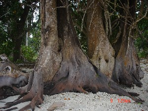 |
ʈɔkʰtɑrɑbuco टौखताराबूचो MORPH: ʈɔkʰ-tɑrɑ-buco. VAR: ʈɔkʰo-tɑrɑ-buco टौखोताराबूचो. N सं. trunk, of dead tree; मृत पेड़ का तना. SD: flora, फूल-पत्ती.Environmental
ʈɔl1 टौल VAR: ʈɔːl टौऽल. V क्रि. do make-up; श्रृंगार करना. ʈʰɛrɛn ʈɔːl ठैरैन टौऽल. I make myself up. मैं सजती-संवरती हूं।. SEE: ʈɔl2 ‘flower’ ‘फूल टौलhm:{2}’; ʈɔl3 ‘medicine’ ‘दवाई टौलhm:{3}’; ʈɔl4 ‘mud’ ‘मिट्टी टौलhm:{4}’.
ʈɔl2 टौल N सं. flower; फूल. SD: flora, फूल-पत्ती. SEE: ʈɔl1 ‘do make up’ ‘श्रृंगार करना टौलhm:{1}’; ʈɔl3 ‘medicine’ ‘दवाई टौलhm:{3}’; ʈɔl4 ‘mud’ ‘मिट्टी टौलhm:{4}’.Environmental
ʈɔl3 टौल N सं. medicine; दवाई. SD: medicine, औषधी. SEE: ʈɔl1 ‘do make up’ ‘श्रृंगार करना टौलhm:{1}’; ʈɔl2 ‘flower’ ‘फूल टौलhm:{2}’; ʈɔl4 ‘mud’ ‘मिट्टी टौलhm:{4}’.Environmental
ʈɔl4 टौल N सं. a kind of white mud; एक प्रकार की सफ़ेद मिट्टी. SD: costume & adornment, आभूषण एवं श्रृंगार. NT: This white clay is used for tattooing. अण्डमानी लोग इस सफ़ेद मिट्टी से शरीर को गोदकर चित्रकारी भी करते थे।. SEE: ʈɔl1 ‘do make-up’ ‘श्रृंगार करना टौलhm:{1}’; ʈɔl2 ‘flower’ ‘फूल टौलhm:{2}’; ʈɔl3 ‘medicine’ ‘दवाई टौलhm:{3}’.
 ʈɔlo टौलो N सं. flower; फूल. SD: flora, फूल-पत्ती.Environmental
ʈɔlo टौलो N सं. flower; फूल. SD: flora, फूल-पत्ती.Environmental
ʈɔlom टौलोम N सं. red clay; लाल मिट्टी. SD: natural environment, प्राकृतिक वातावरण.Environmental
 |
ʈɔlomtutbio टौलोम्तूतबीओ MORPH: ʈɔlomp-tut-bio. N सं. North Andamanese Bird; Oriental Honey-Buzzard; उत्तरी अण्डमानी पक्षी. Pernis ptilorhynchus. SD: bird, पक्षी. NT: Eats wax of honeycomb. यह मधुमक्खी के छत्ते की गोंद खाता है।.Environmental
ʈɔlɔ टौलौ N सं. a kind of tree used in making canoes; पेड़ जो डोंगी बनाने के काम आता है. SD: flora, फूल-पत्ती.Environmental
ʈɔlɔm टौलौम N सं. wax of comb used for strengthening bowstring; छत्ते का मोम जिससे धनुष की डोरी मजबूत की जाती है. SD: hunting & gathering, शिकार एवं संचय सम्बंधी.Environmental
ʈɔːlɔŋ टौऽलौङ N सं. wax; मोम. SD: household, घरेलू.
 ʈɔlɔʈmo टौलौटमो VAR: ʈɔloʈmo टौलोटमो. ADJ वि. white; सफ़ेद. SD: attribute, विशेषता.
ʈɔlɔʈmo टौलौटमो VAR: ʈɔloʈmo टौलोटमो. ADJ वि. white; सफ़ेद. SD: attribute, विशेषता.
ʈɔniu टौनीऊ N सं. a kind of fish; एक प्रकार की मछली. SD: fish, मछली. NT: Found along with prawns in freshwater. मीठे पानी में झींगे के साथ जाल में आ जाती है।.Environmental
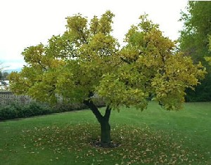 |
ʈɔŋ टौङ VAR: ʈoŋ टोङ. N सं. tree; पेड़. kʰidi ʈɔŋ loboŋ be खीदी टौङ लोबोङ बे. This tree is tall. यह पेड़ लम्बा है।. SD: flora, फूल-पत्ती.Environmental
ʈɔŋkʰurɔ टौङखूरौ MORPH: ʈɔŋ-kʰurɔ. N सं. thumb, lit. toe’s big finger; अंगूठा, शाब्दिक अर्थः पांव की बड़ी अंगुली. SD: body part term, शारीरिक अंग शब्दावली.
 ʈɔŋleo टौङलेओ MORPH: ʈɔŋ-leo. N सं. small tree; छोटा पेड़. SD: flora, फूल-पत्ती.Environmental
ʈɔŋleo टौङलेओ MORPH: ʈɔŋ-leo. N सं. small tree; छोटा पेड़. SD: flora, फूल-पत्ती.Environmental
ʈɔŋtɑrɑbuco टौङताराबूचो MORPH: ʈɔŋ-tɑrɑ-buco. N सं. lower part of the tree trunk; तने का निचला भाग. SD: flora, फूल-पत्ती.Environmental
ʈɔŋtɑrkʰuro टौङतारखूरो MORPH: ʈɔŋ-tɑr-kʰuro. N सं. stem, entire; पूरा तना. SD: flora, फूल-पत्ती.Environmental
ʈɔŋtɛrtɔŋ टौङतैरतौङ N सं. branches, of tree; पेड़ की टहनियां. SD: flora, फूल-पत्ती.Environmental
ʈɔːɲ टौऽञ N सं. a kind of oyster; एक प्रकार की सीपी. SD: marine, समुद्री.Environmental
 ʈɔo टौओ VAR: ʈɑɔ टाऔ; ʈɔ टौ. N सं. sky; आसमान. SD: natural environment, प्राकृतिक वातावरण.Environmental
ʈɔo टौओ VAR: ʈɑɔ टाऔ; ʈɔ टौ. N सं. sky; आसमान. SD: natural environment, प्राकृतिक वातावरण.Environmental
ʈʰɔo1 ठौओ Etym: Khora. VAR: tʰou थोऊ. N सं. cold; ज़ुकाम. SD: illness, रोग. SEE: ʈʰɔo2 ‘winter’ ‘जाड़ा ठौओhm:{2}’.
ʈʰɔo2 ठौओ VAR: tʰou थोऊ. N सं. winter; जाड़ा. SD: natural environment, प्राकृतिक वातावरण, season, मौसम. SEE: ʈʰɔo1 ‘cold’ ‘ज़ुकाम ठौओhm:{1}’.Environmental
ʈɔoukʰe टौओऊखे N सं. sky god; आकाश देवता. SD: mythology, पौराणिक.